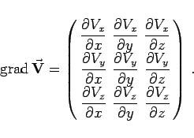

Inhalt Index DeskTop Bronstein

 Vektoranalysis und Feldtheorie Räumliche Differentialoperationen
Vektoranalysis und Feldtheorie Räumliche Differentialoperationen


Der Zusammenhang (13.30c) legt die Bezeichnung
nahe, wobei  Vektorgradient heißt. Aus der Matrizenschreibweise von (13.45a) folgt, daß der Vektorgradient als Tensor mit Hilfe einer Matrix darstellbar ist:
Vektorgradient heißt. Aus der Matrizenschreibweise von (13.45a) folgt, daß der Vektorgradient als Tensor mit Hilfe einer Matrix darstellbar ist:
| (13.45b) |
|  | (13.45c) |
Tensoren dieser Art spielen in den Ingenieurwissenschaften eine Rolle, z.B. bei der Beschreibung von Spannungen und Elastizitäten.